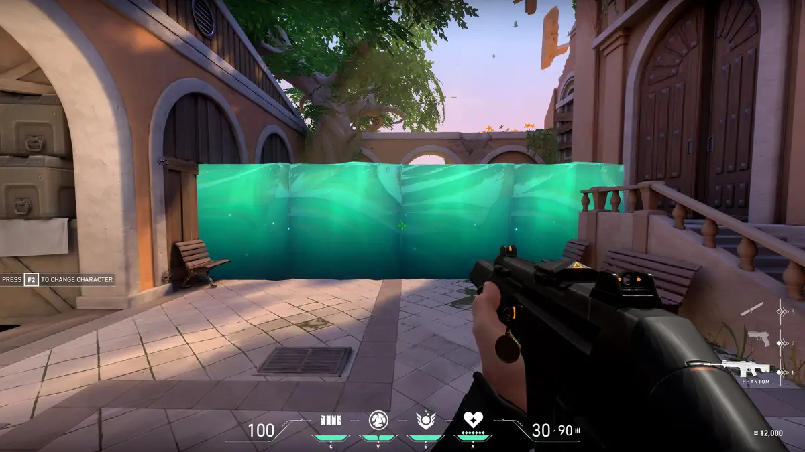

SAGE
Função: Sentinela
Biografia: Originária da China, Sage é uma verdadeira fortaleza que traz segurança para sua equipe. Seu poder de curar aliados e até mesmo trazê-los de volta da morte muda completamente o rumo de qualquer batalha.
HABILIDADES DE SUPORTE
ORBE DE CURA

Q - Cura um aliado (ou a si mesma) em 60HP ao longo de 5 segundos.
ORBE DE LENTIDÃO

E - Lança um orbe que cria um campo que reduz a velocidade dos inimigos.
ORBE DE BARREIRA
C - Constrói uma parede sólida que bloqueia passagens.
RESSURREIÇÃO

X - Revive um aliado morto com HP completo após um breve canal.
ESTATÍSTICAS DE CURA
- Cura por segundo: 12HP/s
- Tempo total de cura: 5s
- Alcance: 15m
- Cooldown: 35s
- Dica: Priorize aliados com operadores ou médio/longo alcance
GUIA DE RESSURREIÇÃO
Tempo de canalização: 3 segundos
Posicionamento ideal:
- Escondido atrás de cobertura
- Longe de linhas de visão inimigas
- Com aliados protegendo o flanco
Estratégia: Comunique com a equipe para criar distrações durante a ressurreição
DICAS DE BARREIRA
- Use a parede para bloquear rotas de push inimigo
- Pode ser usada para alcançar lugares altos
- Destrúa partes da parede para criar fendas de tiro
- Combine com Orbe de Lentidão para controle de área
- 800HP totais - 400HP por segmento